可编程科学计算器已经开始支持数据，语音和视频通信的功能（还处于测试阶段）。需要注意的是，可编程科学计算器引入的这些功能和微信、QQ不同。微信和QQ本质上是通过客户机-服务器的方式实现数据，语音和视频通信，而可编程科学计算器则是真正支持端到端（Peer-to-Peer）的，去中心化的通信。当然，可编程科学计算器引入的这些功能并非是为了和微信、QQ等通信软件竞争，这些功能的引入是为了实现真正意义上的分布式计算。换句话说，引入这些功能将成为可编程科学计算器和MFP语言发展的一个里程碑。
由于还处于非常初级的测试阶段，端到端通信的功能现在仅能收发短消息和进行语音和视频的对话。实现端到端通信的方法是用户和远方的联系人先通过交换email的方式建立端到端的通信连接。待连接建立之后，就不再需要email作为媒介，双方可以直接传递数据和行语音和视频的对话。Email在建立端到端通信连接时起着至关重要的信号通道的作用，本文将详细说明如何选择email服务和设置email参数。
为了进行远距离端到端通信，我们假设用户有两部安卓手机均安装有可编程科学计算器1.7.4.69版，用户还需要有两个email信箱，email信箱有以下要求：
1.该email信箱的邮件服务器支持smtp和imap协议（一般的邮件服务器都会支持）；
2.该email信箱的邮件服务器支持用普通的客户端收发邮件（注意是普通的客户端比如foxmail之类的，不是该邮件服务商自己发布的专用客户端）；
3.该email信箱的邮件邮件服务器允许用户高频率地检查邮件。之所以要高频率地查收邮件，是为了保证建立连接的实时性。否则一方现在发一个连接请求，另一方十分钟之后再收，显然发连接请求的那边肯定已经等得不耐烦了，说不定都关机了。
现在软件设置是15秒查一次邮件。但是这并不意味着视频通信需要发大量或者很大体积的邮件。事实是实现一次视频通信双方只需要交换总共6封邮件，而且每份邮件只有大概50-300个字符，视频通信完成后就可以把它们删掉了。
以上三点，主流免费email信箱都应该能够支持。为了方便用户测试，开发者测试了三种不同的email服务，分别是微软的hotmail/outlook，谷歌的gmail和腾讯的qq邮箱。
用户如果想要申请免费的微软邮箱，请登陆https://outlook.live.com/owa/，参见下图：
。点击获取免费账户按钮（英文界面就是Create free account），创建用户的email，参见下图：
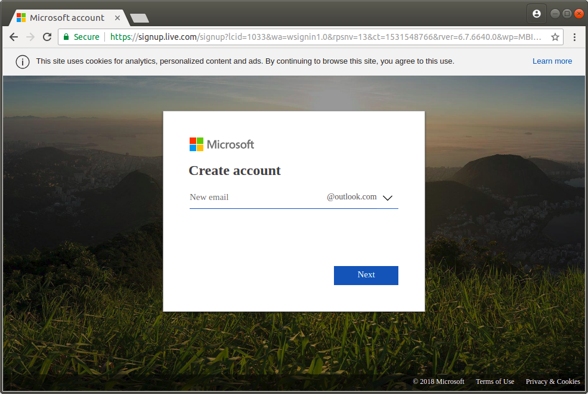
。输入新的email信箱地址，比如，用户输入mfpvideocalltest1，服务器名就选择outlook.com，新的email地址就是mfpvideocalltest1@outlook.com，然后点击下一步（英文版就是Next按钮）：

。然后用户需要输入密码（Create a password），选择一个适当的密码，注意用户不要选中“发给我微软的促销邮件”（英文版就是Send me promotional emails from Microsoft）选项。然后用户点击下一步（英文版就是Next按钮）：

。这时，用户被提示需要输入姓和名（英文版是First Name和Last Name），用户输入之后点击下一步（英文版就是Next按钮），就会看到微软要求用户输入国家和地区，以及出生年月日：
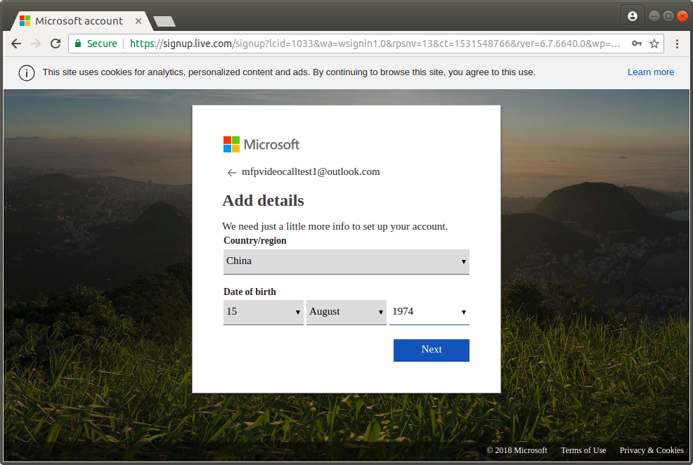
。用户输入之后点击下一步（英文版就是Next按钮），微软就会要求用户进行验证（防止有人用脚本自动注册大量邮箱），用户输入看到的字符，然后点击下一步：
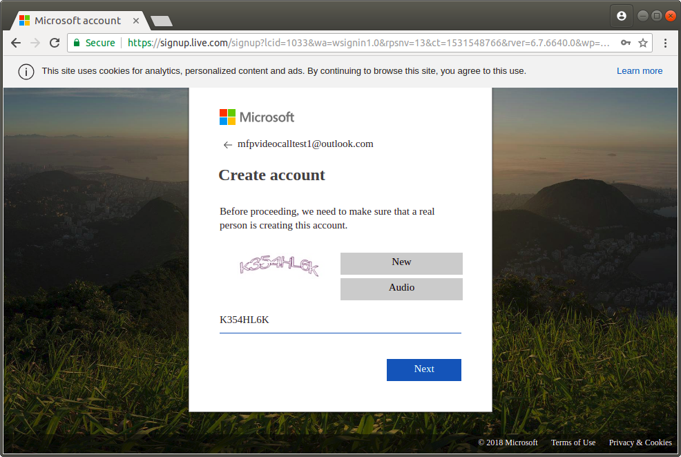
。然后用户就会看到微软的欢迎页面和小提示，跳过它们：
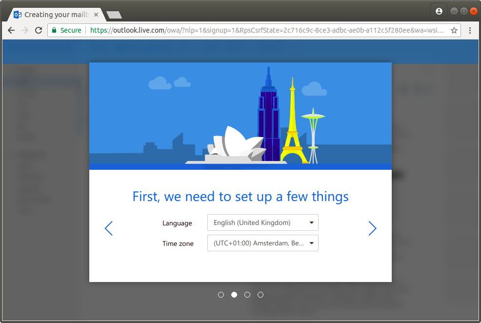
，就可以看到收件箱里面的邮件了：
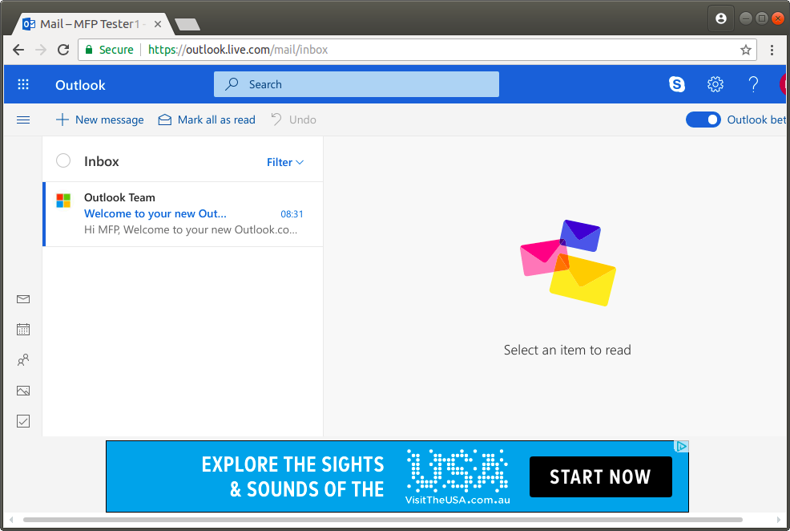。
需要注意的是，为了防止有人偷盗别人的信箱或者用信箱大量发垃圾邮件，微软采取了一些措施。最常见的问题是，可编程科学计算器发出的邮件被outlook信箱放到垃圾邮件（也就是Spam）文件夹中去了。这样用户无法接收到对方发出的邮件，端到端通信就会失败。这时候用户就需要手动干预，把该邮件放回收件箱中（也就是In Box）中。幸运的是，outlook是一个非常智能的系统，用户如果指明某一封邮件不是垃圾邮件，以后从同样的地址发出的类似标题的邮件都不会被当作垃圾邮件。换句话说，至少这个对方email地址以后就是安全的了，不必担心被当作垃圾邮件的问题。如果用户还不放心，可以修改邮箱设置，明确指出从某一个email地址发出的邮件不是垃圾邮件。
再比如，如果微软侦测到用户的outlook信箱在一个不同的地方或者通过一个不同的设备登陆，看起来不像是用户本人所为，微软会阻止该次登陆，并且向该信箱发一封邮件要求确认是用户本人在该地址使用该设备登陆，信件的标题内容大致如下（以下图片是英文版，中文版与之类似）：
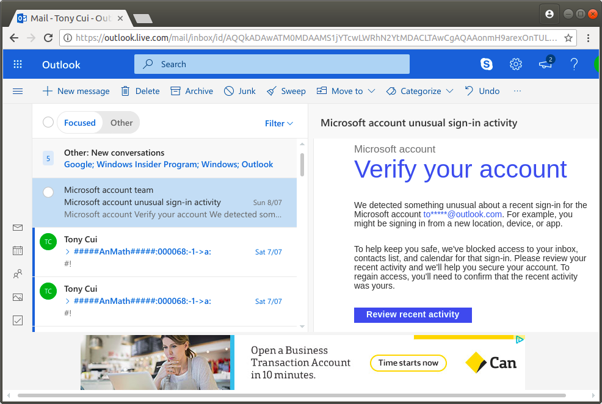
。由于一个很可能的场景是用户在某地用个人电脑申请了一个微软outlook邮箱，但是在进行远程端到端通信时这个邮箱绑定在另一个地方的安卓手机上，这样一来，当该手机第一次通过该邮箱收发email时，就会被微软阻止。在这种情况下，用户需要手动登陆到web邮箱中，找到这封微软发出的警告信件，点击“浏览用户最近的活动”（英文版Review recent activity）按钮，可能还需要再次输入密码，微软可能还会发送一个字符码给用户的手机或者另外一个邮箱（如果用户把邮箱和手机号或者另外一个邮箱绑定了）要求用户验证身份，参见下图：

。验证完毕后用户就可以看到最近访问邮箱的活动，参见下图，如果某一次对邮箱的访问是通过别的设备在另外的地方进行而被微软怀疑和阻止，微软会显示该次访问的详细信息并且会有一个按钮要求用户确认这是不是自己。用户点击该按钮确认是自己，这样以后从该地用该设备访问邮箱就不会出现问题了。

。用户在使用微软邮箱时还可能遇到的问题是，在刚开始使用时，微软不会允许用户在短时间内发出超过一定数量的邮件。而且这个限制很严，好像是超过5封就被禁止在当天继续发信了，必须等到第二天发。对于可编程科学计算器远程端到端通信来讲这是不可接受的。幸运的是，和上面一样，出现这种情况后微软会向该信箱发一封邮件要求用户确认不是在发垃圾邮件，参见下图：
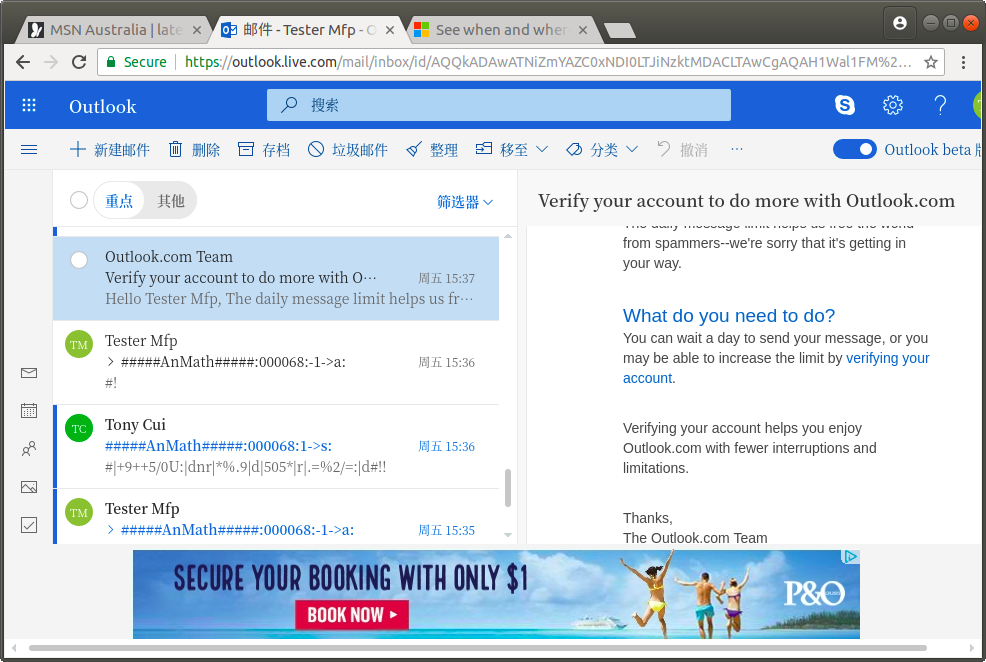
。用户需要点击“验证你的账号”（英文是verifying your account），然后告诉微软用户的手机号，微软会发给你一个字符码，用户将字符码输入确认，然后该手机号就和微软的email绑定了，用户发送邮件就不会再受限制了。参见下图：
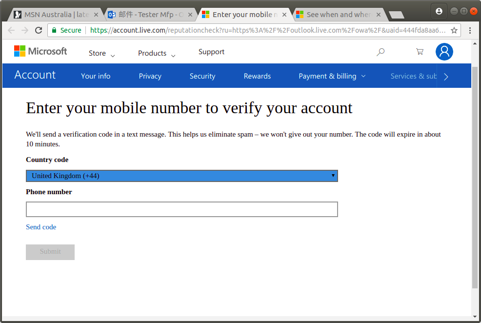。
腾讯的qq邮箱在中国大陆被广泛使用。但在中国境外非华人圈使用的人不多。腾讯qq邮箱服务也很稳定，唯一的问题是设置起来比较麻烦。
注册qq邮箱，不见得非要需要注册一个相应的qq号。注册qq邮箱的网址在：https://ssl.zc.qq.com/v3/index-chs.html?type=2 。注意现在qq邮箱都是需要发送短信验证码进行实名验证的。同时用户需要提供一个不同的激活邮箱，用于收取激活qq邮箱的email。
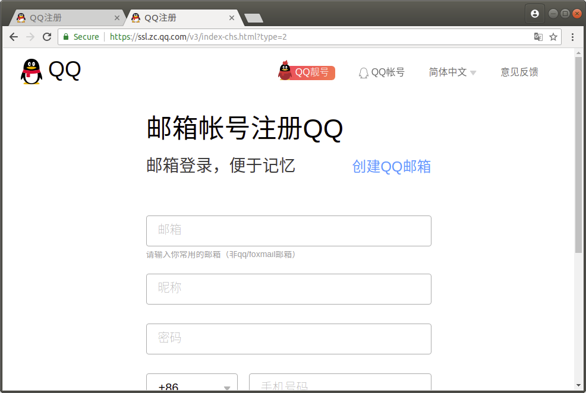
。注册完成后，用户会收到提示如下：
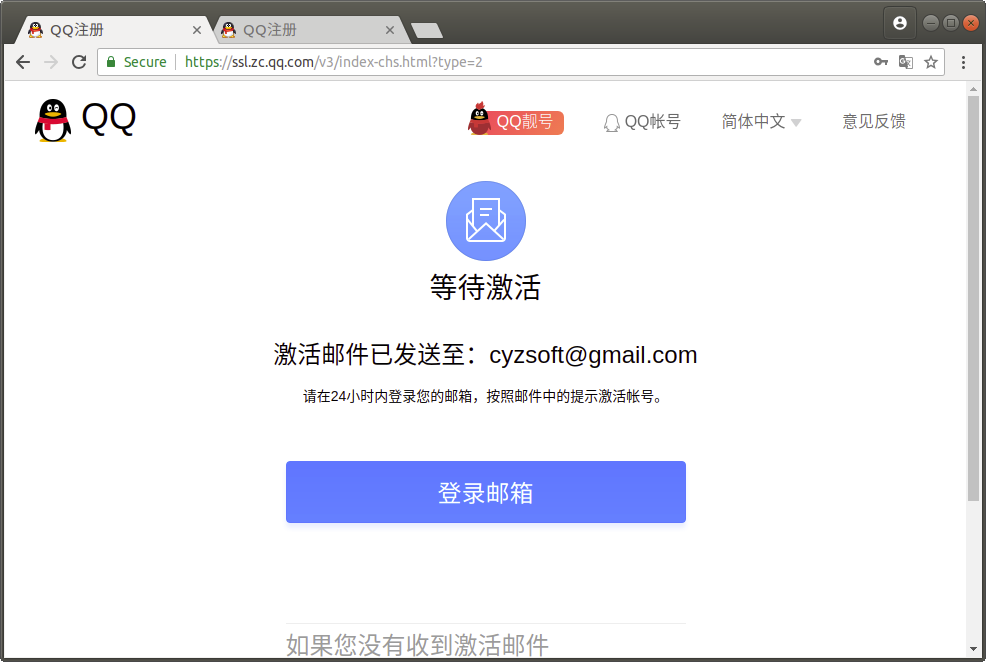
。用户进入自己的邮箱点击激活链接，进入如下界面，用户点击立即登陆，便进入新申请到的qq邮箱：
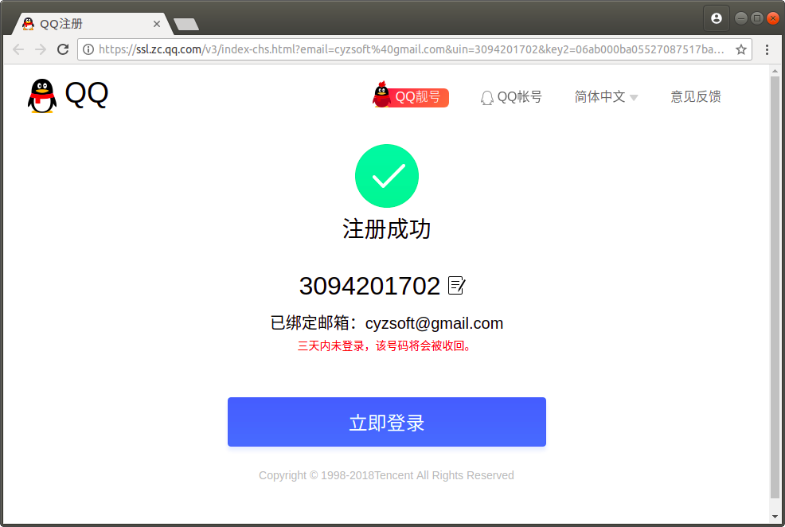
。用户进入qq邮箱之后，还需要申请开通邮箱：
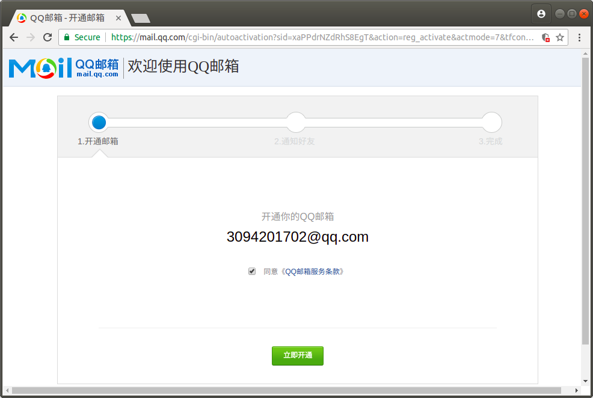
。然后进入qq邮箱，用户就可以使用基于web的qq邮箱了。但是，这不意味着可编程科学计算器远程端到端通信能够使用这个qq邮箱，用户需要点击qq邮箱上部的设置链接，对客户端进行设置：
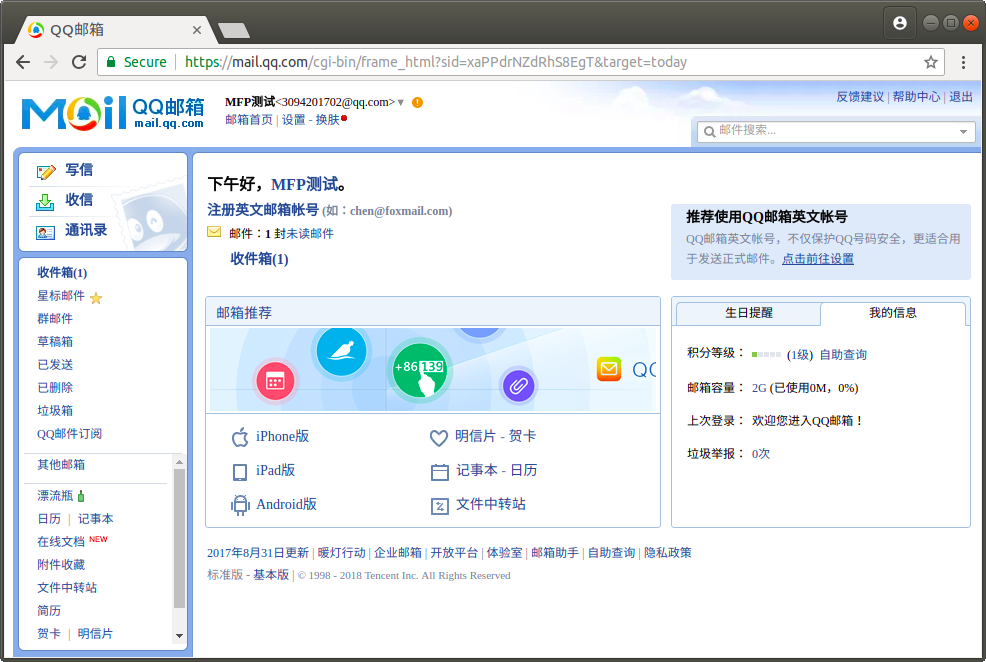
。在邮箱设置界面中，用户需要点击“帐户”标签，滑动到POP3/IMAP/SMTP/Exchange/CardDAV/CalDAV服务，这里是用户设置客户端收发邮件的地方：
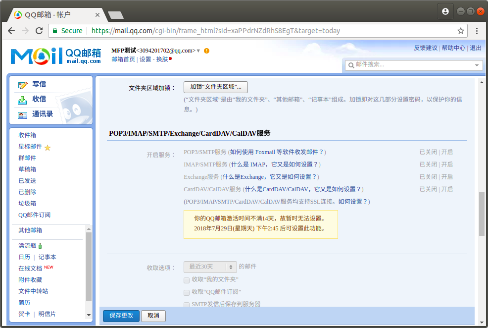
。但由于qq邮箱刚刚激活，用户必须等待14天之后，才能够设置客户端服务。如果用户已有qq邮箱，则可以设置客户端服务：
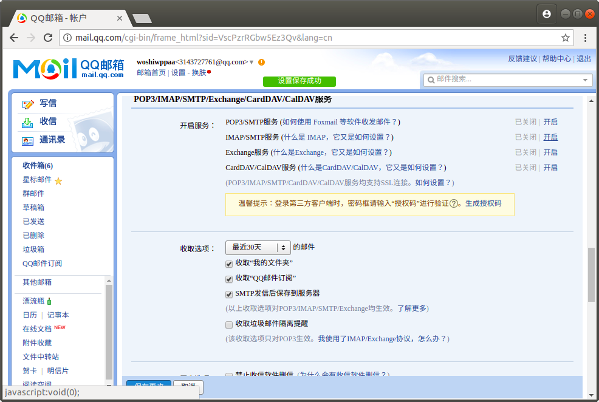
。用户需要设置的是IMAP/SMTP服务，这里，IMAP服务是用于收邮件，而SMTP服务是用于发邮件，用户需要点击左边的“开启”链接将其打开。同时，为了跟踪端到端通信所发的每一封邮件，用户需要选择“SMTP发信后保存到服务器”。
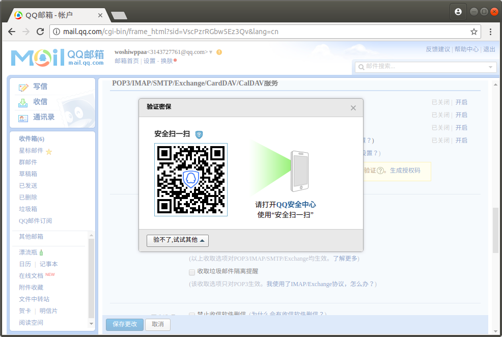
。注意开启的过程比较麻烦，用户需要在手机上安装QQ安全中心，使用“安全扫一扫”，对二维码进行扫描，参见上图。扫描完成后，会自动验证并生成授权码。这个授权码就是可编程科学计算器在进行端到端通信连接时收发邮件的登陆密码，参见下图：
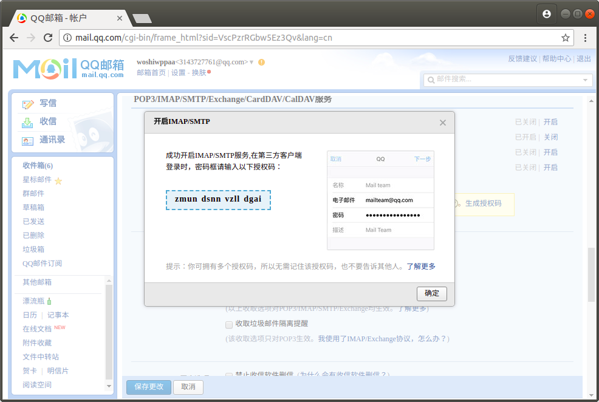
。最后用户需要点击保存修改即可。
需要注意的是，腾讯不允许用户频繁地开启关闭客户端服务或者生成授权码。如果用户一天只能最多生成2次授权码，超过这个次数，就只能24小时之后再试。
腾讯的qq邮箱也会出现邮件被错误地移动到垃圾箱中的问题。在刚刚开始进行视频连接的时候用户必须随时注意垃圾箱中是否有邮件。如果有用于可编程科学计算器远程通信的邮件，用户需要点入这个邮件，选择不是垃圾邮件，最后再将其移动到收件箱中，这样这个对方email地址以后就是安全的了，不必担心被当作垃圾邮件的问题。
此外，虽然开发者还没有遇到过，但不排除qq邮箱会像微软的outlook邮箱一样，当怀疑不是用户本人登录时，会阻止该次登陆，并给用户发一封警告邮件。在这种情况下，用户需要随时注意qq邮箱是否有异常邮件。
幸运的是，和outlook邮箱一样，上述问题通常只会出现在刚刚开始使用该信箱进行远程端到端通信的时候，在成功进行端到端通信之后，上述问题一般不会再出现。
Google的gmail邮箱在除了中国大陆以外的全球范围内被广泛使用。Google的gmail邮箱服务非常稳定可靠，但是设置起来比微软outlook邮箱要麻烦，并且在中国大陆的使用受到了限制。
众所周知，在除了中国大陆以外的全球范围内Android手机是和gmail邮箱绑定的。由于可编程科学计算器是在安卓手机上运行，相信绝大多数用户已经拥有一个gmail邮箱。
如果用户想要申请新的gmail信箱，可以到https://gmail.com进行申请，然后按照Google的提示一步一步设置用户名和密码即可。为了更方便地进行操作，建议用户在电脑上而不是在手机上进行设置。
需要注意的是，gmail和outlook邮箱不同，不经过设置无法通过客户端的方式收发邮件。用户需要点击屏幕右上方的齿轮图标，选择“设置”（Settings），然后再选择“转发和POP/IMAP”（Forwarding and POP/IMAP），参见下图：
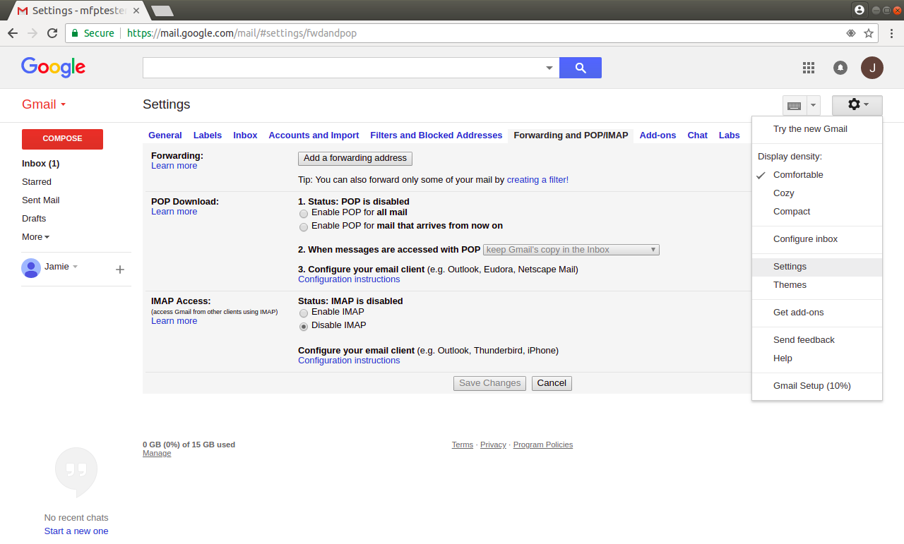
。在“POP下载”（POP Download）选项中，选择“对从现在起收到的邮件启用POP”（Enable POP for mail that arrives from now no）,在“当通过POP访问邮件时”（When messages are accessed with POP），选择“在收件箱中保留Gmail的副本”（Keep gmail copy in the inbox），在“IMAP访问”（IMAP access）中，选择“启用IMAP”（Enable IMAP），选择启用IMAP后，IMAP访问的其他设置使用Google的默认值即可。最后点击“保存更改”（Save Changes）按钮即可。
使用可编程科学计算器通过gmail邮箱收发邮件，有两种不同的情况。第一种情况，是使用的gmail邮箱，不是和安装可编程科学计算器应用的安卓手机绑定的那个gmail账号。在这种情况下，必须采用和web登录方式不一样的密码。设置该密码需要点击窗口右上角的9个小方块所构成的图标，选择“帐户”（Account），参见下图：
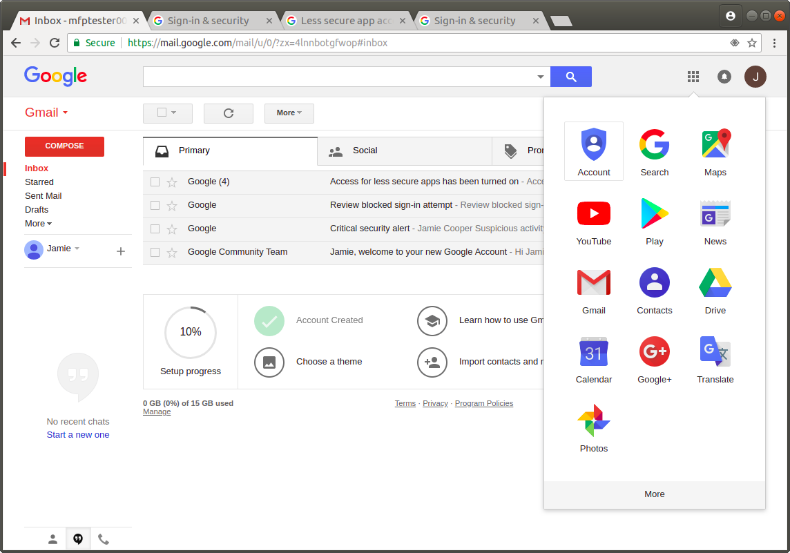
。然后用户会进入一个新的页面，用于控制和维护帐户的安全。用户需要点击“登录和安全”（Sign-in & security）设置区块下的“登录Google帐户”（Signing in to Google）链接，参见下图：
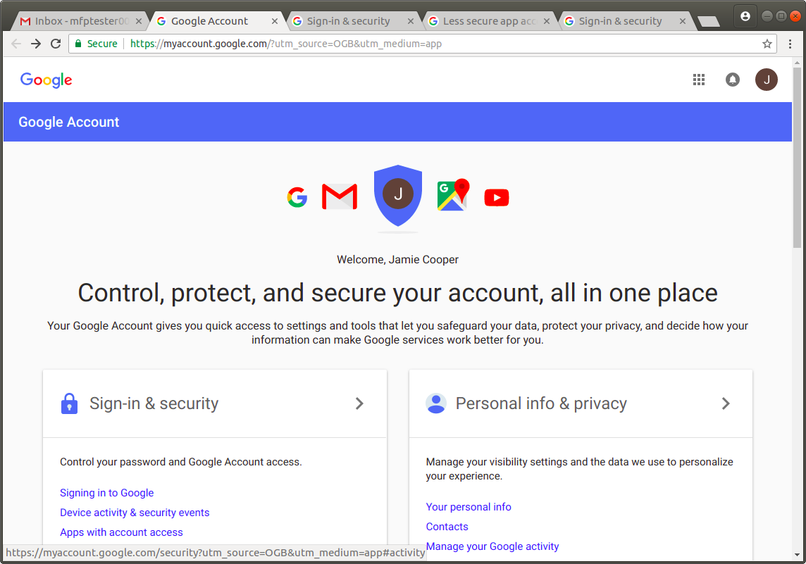
。然后用户会进入一个新的“登录和安全”（Sign-in & security）页面。用户下滑至“密码和登录选项”（Password & sign-in method），然后点击“两步验证”（2-Step Verification），参见下图：
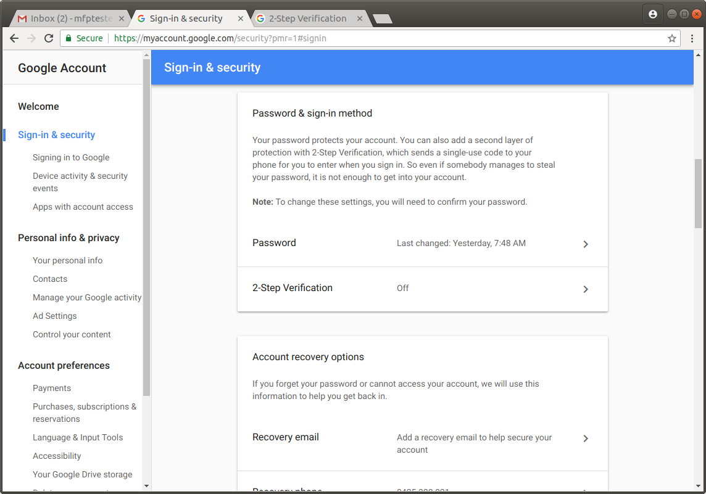
。注意这时用户可能会被要求重新输入密码，并且Google还会向用户绑定的手机发送验证码。如果密码和验证码的输入都是正确的，用户会进入一个新的界面如下。然后用户点击“启动”（GET STARTED）按钮，两步验证则会被启动，参见下图。用户同时会收到一封email告知两步验证已经被启动了。
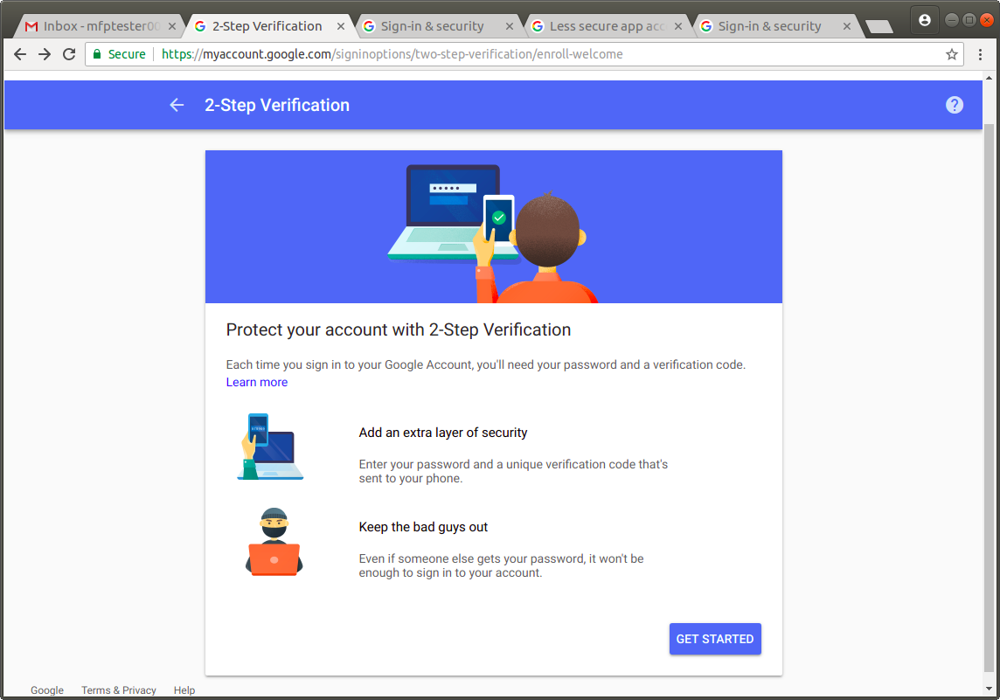
。然后用户回到gmail信箱界面，重新点击窗口右上角的9个小方块所构成的图标，选择“帐户”（Account），进入控制和维护帐户的安全的页面。和前面操作一样，用户需要点击“登录和安全”（Sign-in & security）设置区块下的“登录Google帐户”（Signing in to Google）链接，进入一个新的“登录和安全”（Sign-in & security）页面。用户下滑至“密码和登录选项”（Password & sign-in method），注意到这时，“两步验证”（2-Step Verification）设置项下多出来了一个“应用密码”（App passwords）设置项，参见下图：
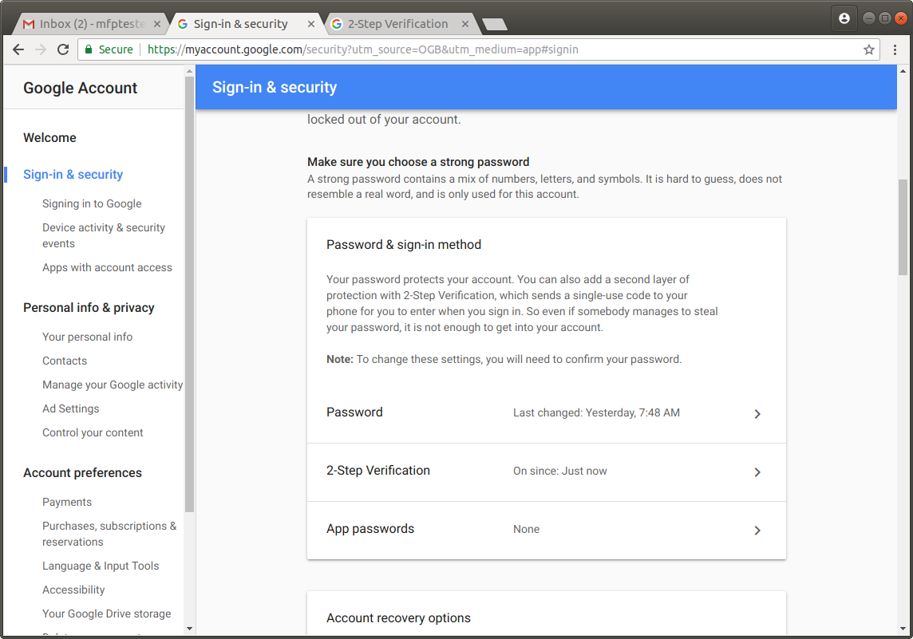
。用户点击进入，注意Google会要求用户再次输入gmail密码并向用户手机发送验证码。如果用户密码和验证码输入正确，将会进入一个应用密码生成界面，参见下图：

。用户点击“选择应用”（Select app），选择“其它（自定义名字）”（Other (Custom name)），输入名字Scientific Calculator Plus（其实这个名字是无关紧要的，但用户需要保证永远只有一种应用使用这个密码，该应用的名字不见得必须是Scientific Calculator Plus），这个时候，“生成”（GENERATE）按钮就会变成蓝色，意味着用户可以为应用生成访问gmail的密码了。点击这个按钮，就会得到一个新的应用访问gmail密码（这个密码和通过web访问gmail的密码是不一样的），参见下图：
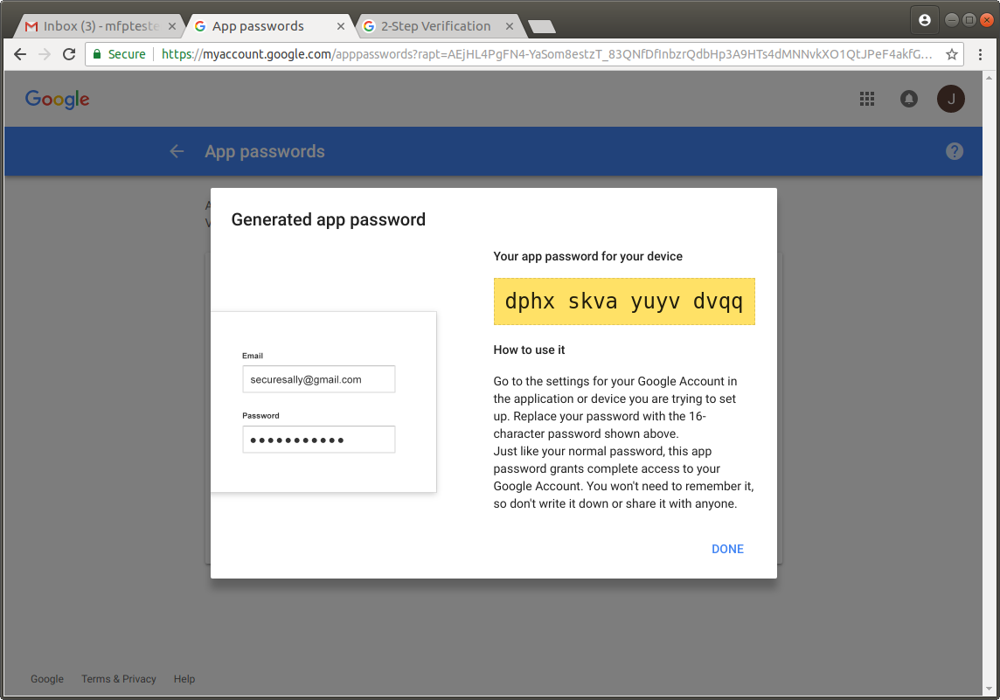
。注意密码由16个字符组成，密码的中间是没有空格的。用户将密码记下来，然后点击“完成”（DONE）按钮即可。该密码可以永久使用，除非用户自己把它删除。
使用可编程科学计算器通过gmail邮箱收发邮件的第二种情况，是使用的gmail邮箱，就是和安装可编程科学计算器应用的安卓手机绑定的那个gmail账号。在这种情况下，用户可以直接使用通过Web或者安卓手机登录gmail的密码。但是，Google认为这不是一种安全的方式。所以，当可编程科学计算器第一次用Web方式的gmail密码收发邮件时，会被Google阻止。用户会收到一封信，要求用户检视被阻止的登录企图（Review blocked sign-in attempt）。用户需要用手机或者Web方式登录到该gmail信箱，点开该邮件，然后点击“允许比较不安全的应用访问”（allowing access to less secure apps），参见下图：
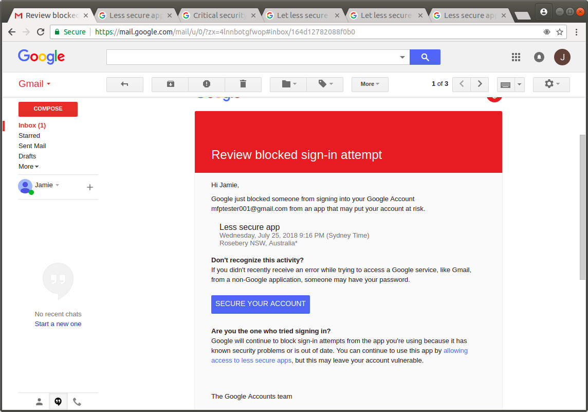
。然后用户打开“允许较不安全的应用”开关，访问就不再会出现这样的问题。参见下图：
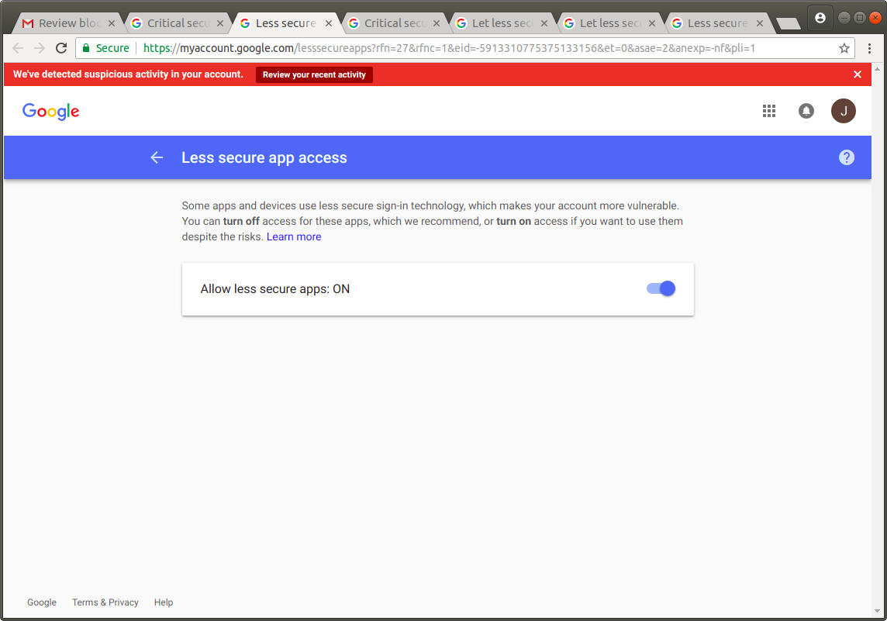
通常，如果用户的手机或电脑是第一次访问该gmail邮箱，Google会怀疑不是用户本人登录，会给该gmail信箱发一封警告信，标题可能是“重要安全警报”（Critical security alert）或者其他相关信息，内容大致是Google怀疑非本人登录信箱进行非法操作，需要用户检查信箱最进的活动，参见下图：

。用户需要点击“检查最近活动”（CHECK ACTIVITY）按钮，然后告诉Google这是本人即可（点击“是的”（YES）按钮），参见下图：
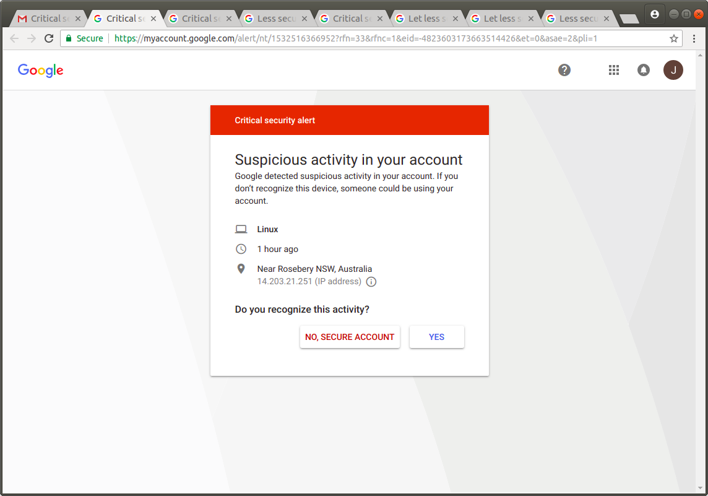。
还有一个问题是，和outlook以及其他的信箱类似，gmail有可能把可编程科学计算器发送的邮件转移到垃圾箱（Spam）中。在这种情况下，用户必须手动登录到该gmail信箱，把该邮件转移回输入箱（Inbox）中，并且告诉Google以后类似的邮件都不能放在垃圾箱中。
为了设置端到端的通信，用户需要打开可编程科学计算器，选择“设置”，然后再选择“远程连接设置”，然后点击确定按钮，便进入了设置界面。
设置的第一项是电子邮箱，注意这里不能包含电子邮箱拥有者的名字或者其他非电子邮箱地址的字符。换句话说，电子邮箱只能遵循xxxx@xxxx.xxx.xxx的格式，诸如xxxx xxx
第二项是用户端收发邮件的密码。
第三项是电子邮件的smtp地址。注意如果是gmail，微软outlook或者hotmail，或者腾讯的qq邮件，软件会自动为用户填好该地址。否则，用户必须自己键入正确的地址。
第四项是电子邮件的smtp服务的端口。同样，软件会自动为用户填好gmail，outlook/hotmail和qq邮件的端口。其他的邮箱必须由用户自己填写。
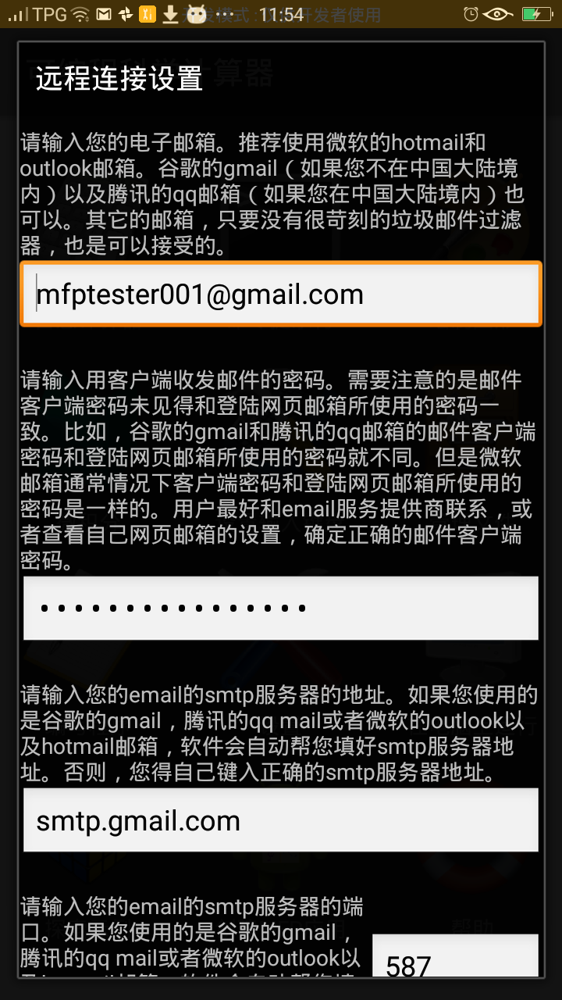。
第五项是电子邮件的imap地址。注意如果是gmail，微软outlook或者hotmail，或者腾讯的qq邮件，软件会自动为用户填好该地址。否则，用户必须自己键入正确的地址。
第六项是电子邮件的imap服务的端口。同样，软件会自动为用户填好gmail，outlook/hotmail和qq邮件的端口。其他的邮箱必须由用户自己填写。
第七项是是否启动后台信号服务。用户只有在启用时才能接收连接请求。但是，后台启用服务意味着电池快速消耗。有一些手机，比如OPPO，小米，华为和一些三星手机，为了省电，在缺省设置下会禁止非特许应用运行于后台。在这种情况下，如果手机没有连接充电器，用户需要手动设置允许本应用在后台运行。比如对于OPPO手机，用户需要转到设置，选择电池，从应用列表中选中本应用，然后禁止“后台冻结”和“检测到异常时自动优化”。如果手机连接了充电器并且正在充电，至少是对于OPPO手机，用户不需要作任何特殊的设置，应用仍然可以运行于后台。
第八项是当收到连接请求时允许后台服务自动启动应用。如果这一项被选中，哪怕手机已经被锁定，如果连接请求到来，摄像头和麦克风都会自动打开。
第七项和第八项设置对于远程监控系统非常有用。如果用户想用安卓手机和可编程科学计算器架设一个远程监控系统，这两项必须选中。
第九项是允许后台服务在一段时间后自动启动目标地址输入对话框。对于一些设备，比如OPPO，这一点很重要，否则后台服务在一段时间后会被系统自动关闭。
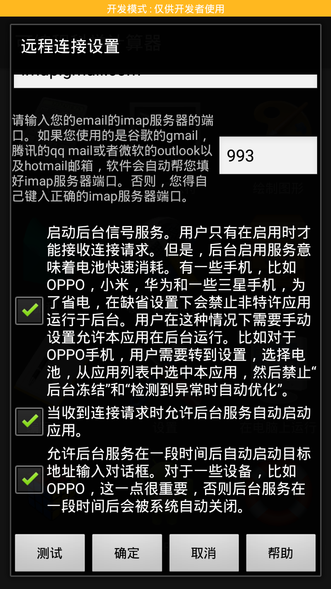。
用户进行设置之后，可以点击“确定”按钮。设置被保存，设置窗口关闭。如果用户选中了第七项，启动后台服务，后台服务将会被启动，否则，如果第七项未被选中，即便后台服务已经被启动，也将会被关闭。
如果用户点击测试按钮，则会出现要求用户输入文本的对话框。这就是用户需要输入的要连接的对象的email地址。注意这里不能包含email拥有者的名字或者其他非email地址的字符。换句话说，email只能遵循xxxx@xxxx.xxx.xxx的格式，诸如xxxx xxx<xxxx@xxx.xx.xxx>或者出现<，>以及逗号和分号都是非法的。如果用户什么都不填，则将会连接自己。用户填好后点击确定，视频通话界面即被打开。用户需要大概等待3-5分钟，期间屏幕上会出现一些快速闪过的提示，告诉用户连接状态。如果连接成功，视频窗口会出现一个小的窗口，显示对方头像。用户也可以给对方发送短消息（输入短消息，然后按“发送”按钮），参见下图：
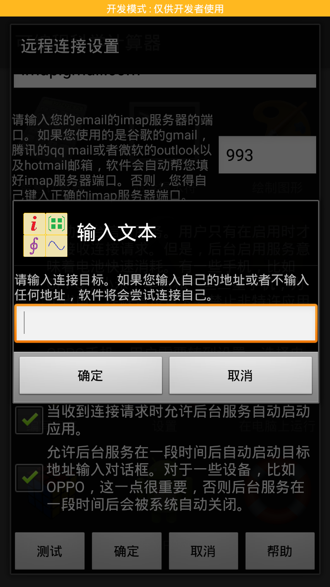。
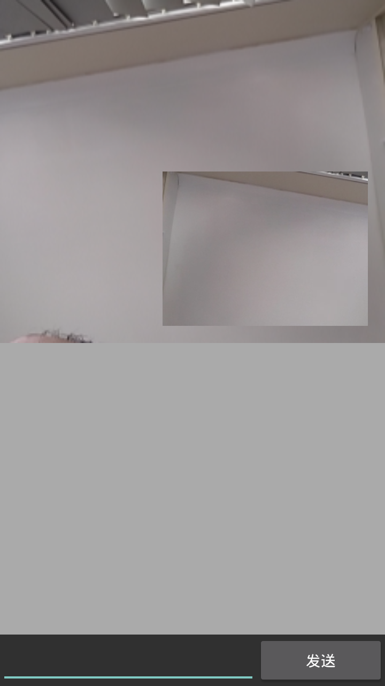。
。如果等待了7-8分钟仍然没有对方的头像出现，并且用户非常确定对方已经启动了后台服务，对方的email地址是正确的，并且自己的email地址，密码，smtp和imap服务地址端口都没有错，那么，用户就需要登录到自己的email邮箱检查发件箱是否有给对方发送的email，email标题是#####AnMath#####:000068:1→s，然后再检查收件箱是否有对方的回复，email标题应该是类似于#####AnMath#####:000068:0→s:0→s:0→s:0→s:0→s:0→s:0→s:，垃圾邮件箱中是否有上述邮件。如果看不到这些邮件，说明email服务还是有问题。如果实在解决不了，可以和开发者联系：cyzsoft@gmail.com。